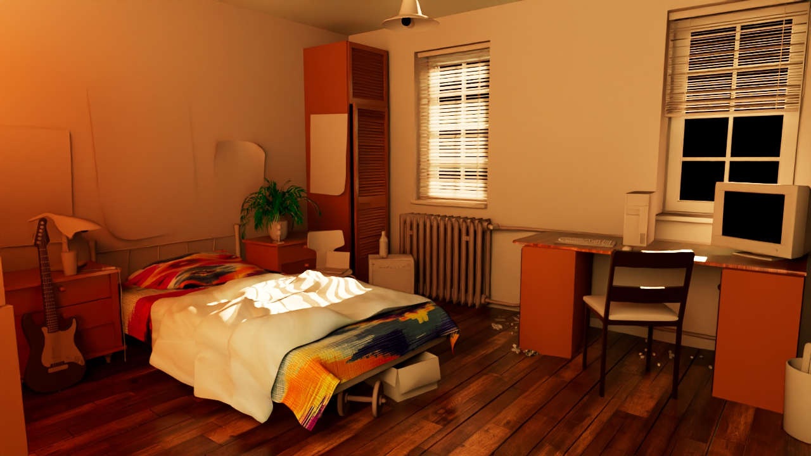
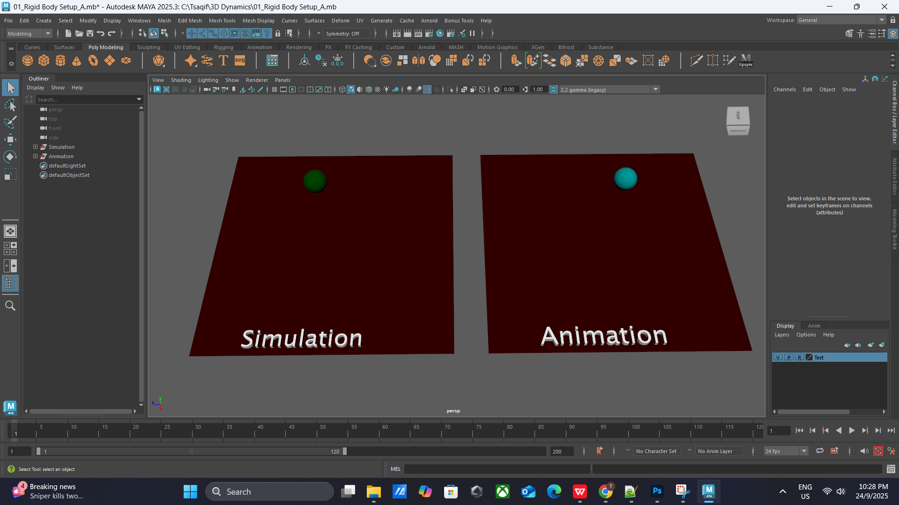
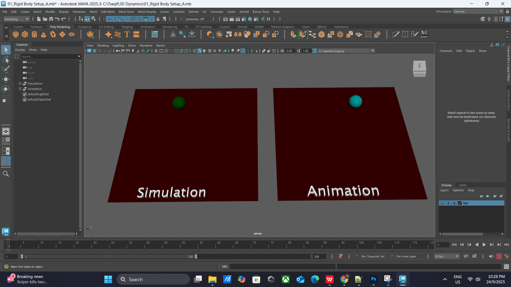
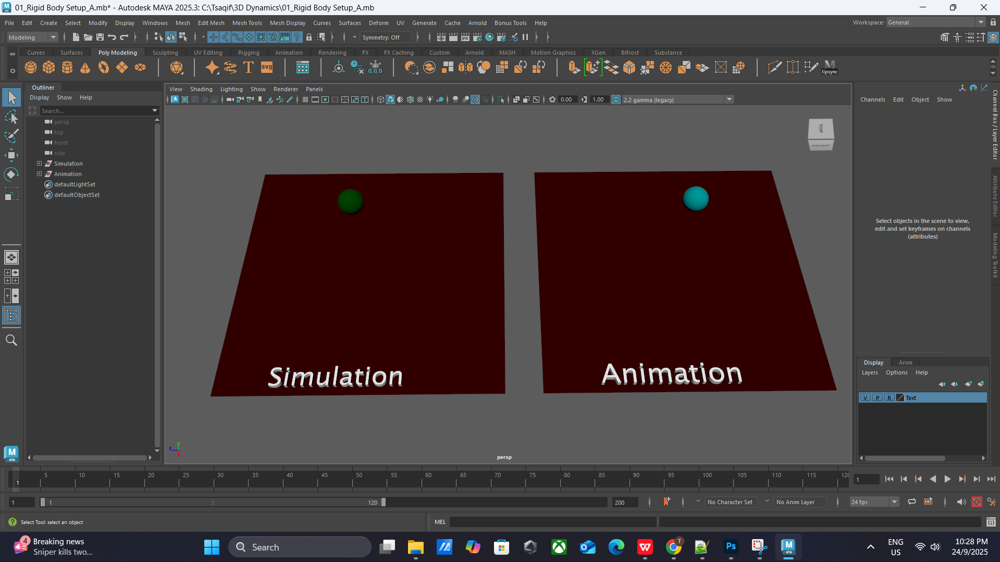

My MAYA Projects
Here are some of the projects I’ve worked on using Autodesk Maya, including 3D models, rendered scenes, and animation experiments:

 


(Replace these images with your own project screenshots)